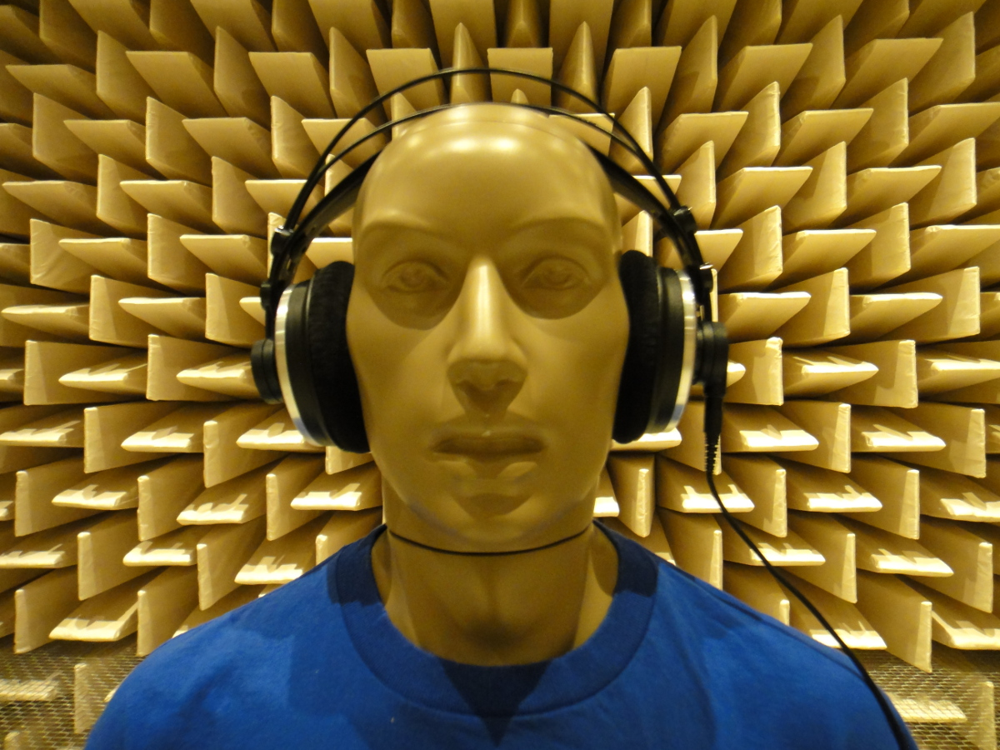

Here you can find publicly released multimedia contents, related to the project.
Genomix Matlab Bridge in operation
This video demonstrates the Genomix Matlab Bridge (GMB) developed in the project to connect the software architecture specific to robotics (see GenoM3) with the Matlab platform. This enables real-time communication between the software components developed in Matlab (peripheral processors, cognitive processors) and those in the GenoM3 architecture (e.g., head/body movement, audiovisual signal acquisition). The clip shows a PR2 robot controlled in a simulated environment created with MORSE.
Two!Ears Sound Localisation Demo with KEMAR Dummy Head
Here you can see the demonstration as posted below, but now connected with a KEMAR dummy head and torso simulator that rotates as seen in the GUI. This is made possible through the blackboard system (see the next demo below), the GenoM3 modules (for audio capturing via the KEMAR head and for its movement), and the Genomix MATLAB Bridge (GMB) that connects the two platforms.
Two!Ears Sound Localisation Demo
This is a demonstration of sound localisation for the project, using knowledge sources within a blackboard architecture. The knowledge sources cooperate to determine the position of each sound source, using information from internal auditory representations and head movements.
Illustration of the Human Auditory System
If you want to talk about the auditory system to your students it is sometimes hard to find free material like illustrations of the phenomenon. Here, we provide an illustration that is available under the Creative Commons license and can be used for all purposes. The image is available as png, svg, eps, pdf.
{kind=link}

The parts highlighted in blue are the auditory path way starting with the cochlea and ending in the auditory cortex.
In between marks are highlighting the processing steps starting at the cochlear nucleus, superior olivary complex, and lateral lemniscus in the brainstem going further to the inferior colliculus in the midbrain and the medial geniculate body in the thalamus.
The idea for this illustration is borrowed from B. Grothe, M. Pecka, and D. McAlpine Mechanisms of Sound Localization in Mammals. The cochlea and outer ear is from L. Chittka and A. Brockmann, Perception space–the final frontier. The sketch of the brain is based on K. Talbot et al, Synaptic dysbindin-1 reductions in schizophrenia occur in an isoform-specific manner indicating their subsynaptic location.
Initial Press Release
How do humans listen?
Modelling auditory perception in the Two!Ears project

The goal of the Two!Ears project is to improve computer models of human hearing, and thereby advance our understanding of human auditory information processing. The project tackles this problem with a new approach: the human listener is seen as a multimodal agent who develops a world model through interactive listening and viewing. Coordinated by the TU Berlin, the international consortium has set the goal to develop an intelligent, active model of auditory perception and experience in the context of listening and viewing. The project received 3 million Euro funding from the European Commission.
Up to now, computer models of human hearing have tended to focus on the evaluation of the signals received at the two ears – in other words, they are signal-driven. In the new Two!Ears approach, the prediction of human understanding and action will be improved by including hypothesis-driven processing. In such a scheme, world knowledge steers and improves the signal-driven evaluation. The system will be enabled to receive auditory events and integrate them with visual and proprioceptive information, for instance indications about the head orientation or the listener’s position in a room. It will thus attempt to describe an acoustic scene in the same way as a human listener does, in terms of primary perceptual constructs such as loudness, timbre and spatial extent. Additionally, the Two!Ears system will determine the meaning of the scene; for example, whether the perceived sounds come from a known or unknown speaker. The Two!Ears system will be realized on a robotic system which is capable of actively exploring its physical environment to orient itself and move around.
The system is based on an open architecture which allows easy modification and extension. This is considered a crucial approach to enable widespread use within the scientific community of the auditory models and cognitive functions developed within the project. Two!Ears will have considerable impact on future developments in information and communication technologies where understanding and responding to sound is relevant. In addition, research in adjacent areas such as biology, medicine, perception and cognitive psychology will benefit from the outcomes of the project. As an example, hearing aid algorithms for listening in situations with many competing speakers might benefit from the insights of the project.
The Two!Ears project started in December 2013 and has a funding period of three years. The international consortium comprises the following nine research institutes from the EU and the US: TU Berlin, Ruhr-University Bochum, TU Denmark, TU Eindhoven, Université Pierre et Marie Curie Paris, University Rostock, University of Sheffield, CNRS Toulouse, Rensselaer Polytechnic Institute Troy.
{kind=link}